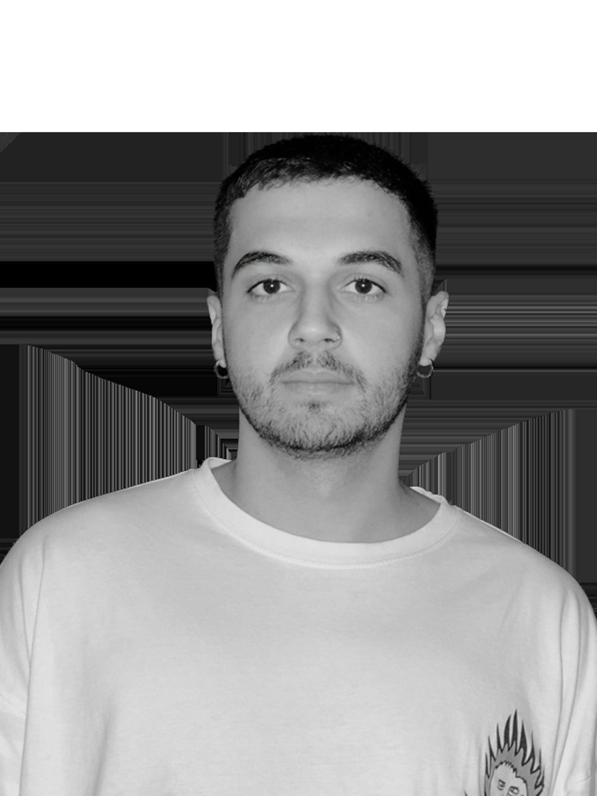

Kimim
Hakkımda

Ben Umut Seçkin. 25 yaşındayım ve Ankara'da yaşayan bir tasarımcıyım. Grafik tasarım, karakter tasarımı, marka ve branding çalışmaları ile 3B sanat alanlarında üretiyorum; bu alanlarda isteyenlere hizmet de veriyorum.
Beni en çok ilgilendiren şey, dijital bir yüzeyin nasıl olup da maddi bir şey gibi durabildiği. Bir yüzeyin ağırlığı, bir ışığın nereden geldiği, bir hareketin ne kadar sürdüğü — bunlar bende renk seçiminden önce geliyor.
Çalışırken önce kağıtta düşünüyor, sonra ekranda kuruyorum. Bir kararı savunamıyorsam geri alıyorum.
Kullandığım Araçlar
- Figma
- HTML & CSS
- Blender
- Adobe Illustrator
- Adobe Photoshop
- After Effects